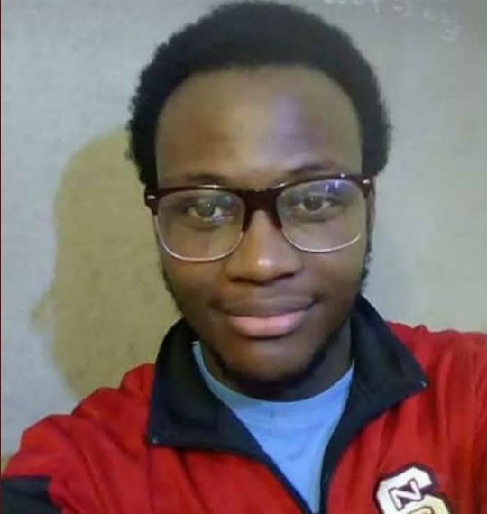

Boaz Eddy Cadet Théodoris
Computer Scientist — Software Engineering, Data Science & Systems
Abstract
I build tools that help people learn, work, and grow — with a focus on education and infrastructure. My work spans full-stack development, systems administration, and applied data science, bridging practical engineering with a drive to make complex ideas accessible.
1. Selected Projects
Smart L1
A comprehensive learning platform for computer science students, featuring SmartFDO, logic solvers, and a pseudocode interpreter that together strengthen understanding of fundamental programming concepts.
DevChelder
An intelligent desktop application that automates complex topography and civil engineering calculations, streamlining workflows for engineering professionals.
SmartNetworking1.0
An educational networking tool that calculates subnetting details and provides step-by-step explanations, helping students master core networking concepts.
2. Professional Experience
System and Network Administrator
- Design, secure, and maintain critical services on storage and monitoring servers.
- Manage, troubleshoot, and optimize network and system infrastructures.
- Implement advanced security protocols using Let's Encrypt, SSL/TLS, and OpenVPN.
- Administer Oracle Linux systems and LDAP directory services.
- Monitor system performance and reliability using Cacti and Zabbix.
Data Entry Intern
- Used SQL for complex data manipulation and database updates.
- Developed and executed sophisticated queries for web data extraction.
- Created custom software solutions to streamline the data entry process.
- Significantly improved productivity and accuracy in database operations.
3. Education
Bachelor's Degree, Computer Science
Database AdministrationOOPSoftware DevelopmentProject ManagementGraph TheoryDiscrete MathematicsAlgorithms
Professional Certificate, Data Science and Artificial Intelligence
Coursework covering linear algebra, calculus, statistics, machine learning, and deep learning, applied through hands-on projects in Python and R.
- Capstone project: Repository (private)
PythonRNumPyMicrosoft Power BIMachine Learning
Développement Mobile — Débutant à Avancé
Three consecutive 60-hour remote tutored trainings (beginner, intermediate, advanced) covering the full mobile development lifecycle with Flutter and Dart — from UI/UX fundamentals and no-code prototyping to state management, local and cloud data persistence (SQFLite, Firebase Firestore), and RESTful API integration.
FlutterDartFirebaseSQFLiteREST APIsState ManagementUI/UX Design
4. Technology Stack
JavaPythonDjangoFlaskC++PHPLaravelJavaScriptReactHTML/CSSDartFlutterSQLMySQLOracle SQLPostgreSQLSQLiteLinuxDockerGit & GitHub